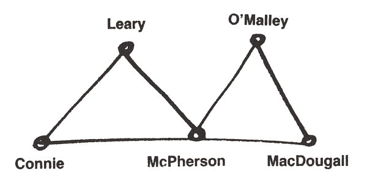
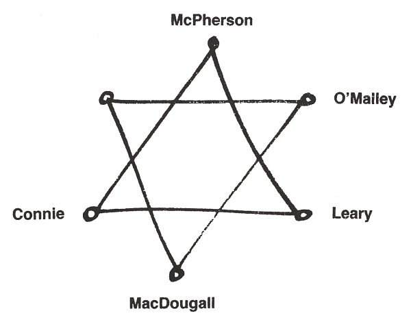
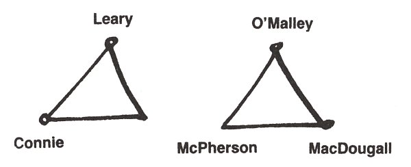
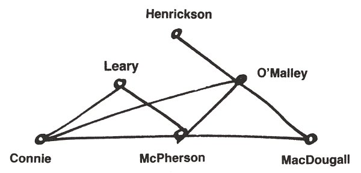
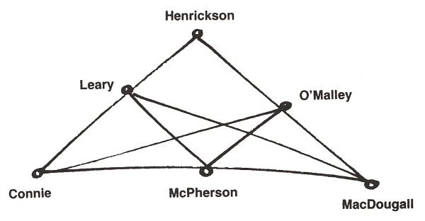
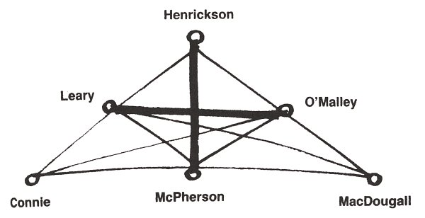
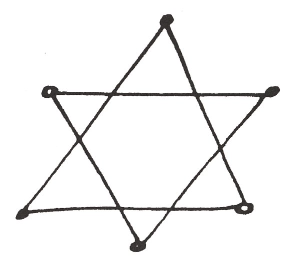
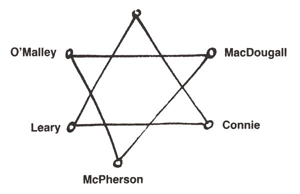

V sobotním Evening Echu bylo sedm zajímavých vražd a večer předtím byl v Růžový džungli fízl. Fízl není vlastně správné slovo, když se v Praze řekne fízl, je na spadnutí facka, a tohle byl shamus, což v New Yorku žádná zvláštní nadávka není. Jeden bohatý Izraelita, který chodíval do Růžové džungle, když jsem tam dostala flek, ale později bohužel přestal, dřív než jsem se s ním stihla blíže seznámit, mi vysvětloval, že to slovo znamená v jiddiš kostelníka, jenomže tohle rozhodně kostelník nebyl, ale naopak hezký chlap jako z detektivky, vysoký, atletický, se šedivýma očima. Ono to v angličtině taky už dávno kostelníka neznamená: jeden pisatel krváků, nějaký Hammett, to mi taky řek ten Izraelita, tím obohatil jazyk, když ho zrovna nenapadlo žádné hezčí slovíčko pro ten druh lidí, co se živí soukromým pronásledováním zločinu, většinou víte jakého. Ten Izraelita se ho tenkrát nedopustil, aspoň ne na mně. No, ale není to zrovna moc šeredný slovíčko, šámus.
A tenhle taky nebyl z těch, které slušná dívka zpraží ledovým pohledem, když si dovolej oslovení v baru. Až na to, že oslovení jsem si dovolila já. Čert ví, jak jsem to poznala, asi to bylo vnuknutí, že je to šámus, takže jsem vlastně mluvila čistou pravdu, když do mě potom hučel a hučel, jak to, že vím, že je detektiv. Prostě jsem to poznala. V Praze to taky vždycky poznám, jenže v Praze je neoslovuju. Ale tenhle – jak jsem ho uzřela, opřenýho o bar, smoking na levé straně trošku vyboulenej od pistole, whisky on the rocks před sebou a šedivýma očima šmejdil jako jen tak a čistě jen z nudy po lokále, povídám: Hello, shamus! a on sebou trhne, jako kdyby vzal za kliku v hotelu Granada. Aspoň u mýho pokoje. To taky čert ví, čím to, ale když u mýho pokoje v Granadě vemete za kliku, dostanete elektrickou ránu, a údržbář, kterého mi tam denně posílaj z recepce, protože si stěžuju, nemůže tomu zaboha přijít na kloub. On je ten údržbář vlastně Čech, vlastně měl před Únorem v Praze květinářství, a tady tvrdí, že to byl elektrozávod, tak mě prosil, abych to na něj neříkala, což jsem neučinila. Ačkoli, jak tak koukám, tady by jim to bylo fuk. Hlavně že udržuje elektriku nebo zlý duchy nebo co to je v Granadě v provozu. Což teda udržuje tak, že když jdu domů, musím si navlíknout rukavice, ačkoli je v New Yorku červen a na Broadwayi trefí šlak z parna průměrně sedm uhoněnejch provajdrů denně.
No a tak on sebou škub, jako kdyby si šáh na tu kliku, a pak zapíral, ale to já poznám, když někdo lže. Byl to moc hezkej chlap, a tak ke mně brzo pojal důvěru a já mu řekla, že to asi bude tím, že je podobnej Paulu Newmanovi, co hrál toho šámuse Harpera ve stejnojmennym filmu, což teda nebyl, ale muj bídnej postřeh mu vůbec nebyl proti srsti, a jak tak začnem žertovat, povídám, že to teda asi musí být v New Yorku pěkně nebezpečný povolání, a MacDougall – tak se ten hezkej šámus jmenoval – povídá, že ani ne a že je to spíš nuda. Proč? No protože šámusové skoro nic nesmějí. To jenom v románech se pořád motaj kolem mrtvolek: ve skutečnosti se motaj jako všude na světe, kolem paniček, co maji trochu moc velkou radost ze života, a jakmile zakopnou o mrtvolku, musej s tim honem běžet na policii. Takže je to úplně stejný jako v Praze za první republiky, aspoň jak se tak říká, protože já přirozeně první republiku nepamatuju. No, to sem ráda, povídám tomu hezkýmu šámusovi, že to vaše povolání je taková selanka, a kouknu významně na tu bouli na MacDougallově smokase, ale on si toho jako nevšim a usmál se jako mužně jako Paul Newman jako šámus Harper, a já povídám: Hlavně že vám to nese. Jemu ten mužnej úsměv zvad, vzdychne, zacinká ledem a praví votráveně, ne jako, ale dovopravdy: Todle je jedinej cinkot, kterej při svym povolání slyšim, a to eště jedině věčinou jen proto, že to de na výdaje započítatelný do účtu zákazníkovi. Dolary mi v kapse necinkaj jako některejm, praví, a já mu kouknu do očí, plovou mu v nich růžový tečky, to jak se tam zrcadlej růžový lampičky na stolech v Růžový džungli, a rozhlédnu se po té naší manhattanské putyce, kam prej občas zapadne i Rockefeller, nevim jestli starej, nebo mladší, nebo ten úplně nejmladší, počítám, že vona celá jejich rodina má ráda umění, co se tady provozuje, všimnu si blondýny, která předsedá čtveřici votuxedovaných gentlemanů a vypadá jako manekýna z výkladní skříně bižutérie, až na to, že to, co má na sobě, není ani trochu z bižutérie, všimnu si smečky chlapů kolem ní, a ani jeden nemá figuru jako MacDougall; ani Jimmy Starrett, kterej je brácha jejího starýho, a jestli se divíte, jak to všechno vim, tak to ne že bych byla ňáká zvědavá, ale že mám takový divný nadání, asi telepatický, a vo gentlemanech sem dycky děsně brzo informovaná, a nikdy vlastně nevim jak. Teda ani Jimmy Starrett nemá takovou hruď s celým příslušenstvim, patrně, jako MacDougall, ani Leary, kterýho odhaduju na domácího přítele tý předsedkyně, ani starej Henrickson, kterej jí asi taky má v práci, jako má v práci, jen co já vim, eště aspoň pět vostatních, a rád by i mě, asi aby mu to dalo šťastný číslo sedum, aspoň mě zval na soukromou jachtu k projížďce po Karibskym moři, jenže jak sem pravila svý přítelkyni Lubomíře: Tůdle! A dokonce ani Rocky Mellow nemá tak fotogenický tělíčko, ačkoli v jednom televiznim seriálu hraje osmapadesátýho Tarzána a prej taky účinkuje v těch filmech, co jim tu řikaj podzemní a co jako vodvážně protestujou proti omezování osobní pohlavní svobody hošanů, jenže prej tam dost shořel, ponivač neni dostatečně hung. Jestli nevíte, co to je, tak se na to neptejte. Já sem se na to zeptala při večeři v jedný český katolický rodině, kam mě pozvali, ponivač ten pán chodil do arcibiskupskýho gymplu v Praze a učil ho tam páter Šilhan, kterýho potom přeložili na biskupák do Zelenýho Hradce, a von mu vo mně páter Šilhan, kterej teď ovšem spravuje hygienický zařízení, napsal, jenomže dyž sem se zeptala na to, co znamená Hung, popřípadě Hung, Hung, Hung, jak to furt čtu v inzerátech na pánský fotomodely, který čtu čistě ze zájmu, ne že bych se chtěla stát fotomodelkou, co je hledaj těmahle inzerátama, tak ten pán z arcibiskupáku zpivonkovatěl a po zbytek večera sme seděli u kafe jak naložený v ledu a co teda ten pán napsal potom páteru Šilhanovi, to teda nevim.
No, ale prostě, když teda odhadnu MacDougallový tuxedo, který v tý konfekci, odkud pochází, musel koupit chlap podstatně tlustší než MacDougall, než ho potom dal do frcu, odkud ho koupila ta pučovna, co si ho v ní MacDougall vypučil, když teda srovnám tuhle plastickou mapu s těma krejčovskýma sonetama, co si jima okrášlili panděra chlapi kolem ty brilantový blondýny, otočím se zpátky na MacDougalla a pravím sladce: Některejma myslíte támhlety? Myslim jako že řek, že jemu dolary v kapse necinkaj jako některejm. Ale on zavrtí hlavou a kouká někam do rohu a povídá: Ty nejsou z mý branže. U těch to neni nic divnýho. Myslim lidi jako já, a pořád vejrá někam do rohu lokálu a já se otážu: Jo vy tu nejste sám? V takovýmhle pajzlu neni člověk mýho druhu nikdy sám, odvětí, a než se stačim urazit, že náš nóbl podnik, kam se na slíkačky chodí dívat i nejmíň tři generace Rockefellerů, nazval pajzlem, praví: Teda, jestli se vo ňom dá mluvit jako vo člověku mýho druhu. Proč ne? povídám. Ponivač tenhle je vostuda naší branže. Vostuda? Je neschopnej? Nedovede myslet, myslim logicky? povídám. Až moc! praví šámus. Jenže toho zneužívá k takový činnosti, co snad horší je už jedině bezbožný klení, povídá. Leccos se doví, i na klienty, a pak vod nich na základě toho inkasuje, ne že by pro ně řádně vodved job. Ach tak, pravím, tak takhle von si vopatřuje voběživo. Přesně tak, praví šámus a položí si ruku na tu bouli pod paží. Kvůli takovejm, jako je von hlavně, musim bejt tadyhle pro jistotu hrbatej, místo abych to měl tadyhle vytahaný, praví a vloží si ruku do kapsy, kde to zacinká, ale na stříbrný půldolary to nevypadá, takovej lacinej, krejcárkovej cinkot. A kerej to je, ten váš kolega, pravim, ne že bych byla zvědavá, čistě jen že mě to zajímá. Ale šámus mlčí jako hrob, jenom zírá do růžový tmy v rohu, tam svítí něco jako loupežnickej kotlík, takový měděný do zrzava, ale neni tomu vidět do tváře, šámus vytáhne ruku z kapsy, přiloží ji ke sklenici a já pravim sladce: A že teda chodíte cinkat ledem zrovna do Růžový džungle? Proč ne spíš do baru do podzemky? Tam byste dostal to samý co tady za to, co tady dáte akorát za ten led?
Sama se divim, jak mi to jede, jak pěkně sem to tady v týhle zemi poetický a tvrdý mluvy odposlouchala, ne že bych byla ukecaná, jak tvrdí Zuzán, která je sama nejukecanější Češka, co se kdy perokurvila, jak vona říká, do nějakýho kapitalistickýho manželskýho lože, ale čistě jen asi proto, že páter Propílek byl tak dobrej latiník, a že jsem k latině taky měla eště řečtinu. MacDougall se na mě podívá nějak divně, jako šejdrem, a útrpně povídá: No, co kdybyste si vo tom trošku zapřemejšlela? Což učinim, a trošku mě to urazilo, ale jsem od přírody přemejšlivá, tak se na něj nezlobím a přemejšlim, bohužel marně, ale zároveň sleduju jeho pohled, šmejkne jím po tý vyšperkovaný a patrně i vylízaný blondýně, sveze se elegantně z barový stoličky a povídá: Mno, já už vlastně můžu domu. Bye, bye, baby! praví jako nějakej MacMac, jenže ten byl vod vopačnýho povolání, zvedne dva prsty jakoby ke střeše klobouku, kterej přirozeně nechal u šilhavý Maud v šatně, neb my jsme skutečně nóbl podnik, zakroutí v tom poněkud velikym smokase rameny, aby mu to líp sedlo, a moc krásnými dlouhými kroky vyštráduje z Růžový džungle.
No, a to je taky poslední věta, co jsem od něho slyšela. Mezi těma sedmi vraždama v sobotním Evening Echu byly nejmíň tři zajímavější než skon Dicka MacDougalla, ale je snad jasný, proč mě zajímala nejvíc ta jeho.
* * *
Den nato, to bylo v neděli, byl mezi čtyřma zavražděnejma zase jeden šámus, nějakej McPherson, a zase to nebyl ten nejzajímavější mord: byl objeven na kanapi ve svým ofisu s obyčejným průstřelem hlavičky, ale zase mě to zajímalo nejvíc. Toho jsem sice z Růžový džungle neznala, i když na fotce mi nějak povědomej byl; podle článku v novinách měl červený vlasy, a tak jsem si vzpomněla na tu zrzavou hlavinku v koutě, co do něj zíral MacDougall. Ale spíš to bylo tím, že to byl už druhý zavražděný šámus v New Yorku ve dvou dnech, a podle jména taky nějakej Ir.
New York má ovšem čtrnáct miliónů obyvatel, nebo tak nějak, asi víc, a z toho nevim kolik šámusů, a patrně ještě víc Irčanů, takže to mohla být docela dobře náhoda.
* * *
Ten třetí, O’Malley, už ale na náhodu nevypadal. Ne že bych mohla vysvětlit proč ne policejnímu inspektorovi O’Raglanovi, když jsem se ho v neděli večer v Růžové džungli snažila přesvědčit, že ti tři spolu nějak souvisí. Prosim tě, baby, řekl mi ironicky. Co to sem pleteš? Seš snad židovka nebo co a věříš na mystiku čísel? No já nevim, bráním se. Já to tak nějak cítim, a O’Raglan se ušklíbne, protivně, že mě popadne vztek. Je taky hezkej, velkej, urostlej, dobře vychovanej. No dobře, povídám, ale sou tu nejmíň dvě zajímavosti. Předně, že to byli všichni tři šamusove, a za druhý, že to byli samí Irčani. To je mi přinejmenšim trošku divný.
A O’Raglan se zase tak protivně ušklíbne, i když mu to sluší. Look here, angel face, povídá, a já už mu chci odseknout, že nejsem pro něj žádná angel face, protože jednak si zakládám na svym bardotovskym výrazu, a jednak jsem pro něho důležitý svědek, ale on se nedá vyrušit a vede svou. Look here, povídá, za poslední tři dni bylo v New Yorku naděláno sedmnáct vražd. Ty říkáš, tři detektivove. Ale mezi těma nedobrovolnejma nebožtíkama byli taky tři realitní agenti, sedum žen v domácnosti a devět lidí zabitejch tupym úderem, samý pěkný židovský čísla, tak co kdybysme se místo do Kriminologický příručky podívali do Talmudu, co? A když už sme u mystiky numer, tak nám to moc nevychází, protože dva praštil vrah něčim do hlavy a jednoho – McPhersona – zastřelil, takže to tu tvojí sladkou symetrii, Kitty Kat, ruší, praví ten vůl. A že to byli sami Irčani? Irčani v New Yorku, cherry pie, sou všude, kde se vyskytne zločin. A skoro vždycky jsou na správný straně zákona, praví hrdě. Ostatně, já sem katolický křesťan, praví ještě hrději, ale není čtyři taky nějaký šťastný židovský číslo? Protože já se menuju O’Raglan.
Možná že se teda o vás zejtra dočtu ve večerníku, odseknu, a vrtá mi v hlavě, jestli tak židovsky vypadám, anebo jestli je to čistě jen jeho fórek kvůli mýmu lpění na těch třech šámusech. Ne že by mi to vadilo, ale potvrzovalo by to jeden zajímavej drb vo mý nebožce mámě, kterej zaslechla Lubomíra a hned s nim samozřejmě běžela rovnou za mnou, protože Lubomíra je děsná drbna, ukecaná a zvědavá, že já něco takovýho nikdy nepochopím. Moje chudák máma byla totálně nemuzikální, stejně jako můj rodič mužského pohlaví a všichni moji předci, jak máme oficiálně zjištěno, samí zaručený košer předci podle Norimberskejch zákonů až do čtvrtýho kolene. Můj táta, když mi jednou kluci z bandu, kterej si říkal Red Music, protože si nechtěli říkat Blue Music, takovej band byl už v Praze, takže to bylo ne tim, že by to byli nějaký soudruzi, ale čistě jen nedokonalou znalostí anglického jazyka, a ten band byl čistě študentskej, z gymplu v Zeleným Hradci, ovšem ne z biskupáku, tenkrát eště jezuiti jazz neuznávali jako zbožnou hudbu, tak když mi jednou kluci z toho bandu hráli pod voknem štrandrle a jeden, kterej byl můj přítelík, zrovna vyšrouboval sólo na trubku až nad vysoký cé, povídá táta: To je strašné, jak dnes ti chlapci hrají na housle nahlas! Vždyť to není vůbec hezké! Čímž se chudák velmi proslavil, jenže každýmu v Zeleným Hradci přirozeně vrtalo hlavou, jak to, že já tak celkem pěkně prozpěvuju s tou Red Music, když mí rodiče jsou na muziku totálně barvoslepý. A někdo, mám dojem, že to byla Lubomířina mamá, která neměla co dělat a po níž se Lubomíra tedy vskutku bezvadně vyvedla, ten někdo tedy vyštrachal, že zrovna když se matka devět měsíců před mým zrozením léčila ve Františkových Lázních, byl tam na rekreaci jeden slavnej operní zpěvák Jóža Sládek-Hradecký, kterej se ovšem ve skutečnosti jmenoval Kohn, ale byl fanatickej přívrženec Spolku Čechů Židů, takže se tak přiboudle počeštil. Jóža Sládek-Hradecký! Něco děsnýho. Eště že oficiálně to muj tatínek není, protože když si představim, že bych se patrně jmenovala Josefa Sládková-Hradecká, tak to je mi milejší, že každej jeden a půltej gentleman vyrobí obligátní fórek na moje jméno a příjmení. Ale tohle všechno samozřejmě O’Raglánkovi v Růžový džungli na Manhattanu nevyprávim, ani se už dál nevyptávám na ty tři šámuse, protože jednak mě vyslýchá kvůli úplně jiný vraždě a jednak mi napadlo, že říct mu, že všechno souvisí se vším, a teda i ty tři šámusové s tou jeho pitomou a nezajímavou vraždou, by jeho chlupatým katolickým uším mohlo třeba znít moc komunisticky, a já si v Růžové džungli chci ještě nějaký ten dolárek na Tuzex vydělat.
* * *
Ta vražda, co si mě kvůli ní podával, se týkala ze všech lidí zrovna tý vyšperkovaný blondýny z Růžový džungle, Connie Starrettové, a jednoho z nositelů tý krejčovský básně, toho, podle mě domácího přítele, Learyho. Pak že v tom všem není nějaká spojitost. A tahal ze mě informace proto, protože to na mě pích Seller, vrchní z Růžové džungle: Jak jsem s nima později ten večer, v pátek, seděla u stolu, neboť mě pozvali. Connie Starrettová projevila přání se mnou promluvit, a tak, když jsem zrovna měla pauzu, přišel za mnou starej Henrickson, stálý host v Růžové džungli, s kterým jsem se odtamtud i odjinud tak trochu znala, abych si k nim prý šla přisednout. Tedy jsem si přisedla.
Ta ženská, Connie, byla kráva. Jak jsem zpívala, všimla si – ohromnej postřeh! – že mám přízvuk, a zatoužila zvědět, co jsem zač. Jela po mně jako lesba z učebnice pro mediky, jenomže tohle já taky moc dobře poznám: V New Yorku je to móda bejt naopak, a jestli ona byla lesbi, tak já jsem Muhammad Ali. To by nesměla ten svůj navoněnej dekolt nastrkovat hned tomu, hned zas tamtomu okolo stolu, jak to dělala. Taky jsem to O’Raglanovi řekla a vyjmenovala jsem ty od krejčího vylepšené výrobky pořadě jménem, jak se mi představili, protože já na jména vždycky dávam majzlíka, můžou bejt důležitý a mám na ně paměť; Johnny Starrett, švagr tý slepičky, kterej jí mezi ty napudrované polokouličky nakukoval úplně nešvagrovsky, Leary, ten, co ho s ní pak voddělali, starej Henrickson, taky známý nakukovač, takže u toho to nebylo nic mimořádného, protože ten mockrát čuměl do dekoltu mně, a vůbec do každýho dekoltu v dohledu svých pajdavých očí, a konečně Rocky Mellow, televizní hvězda, u kterýho nakukování do výstřihu patří ale k profesi, teda k tý televizní, ne k tý podzemní, na kterou není dost hung.
Samozřejmě, protože věc mě zajímala, hrála jsem to na toho suchopára O’Raglana úplně vabank, ale veškerá moje snaha se míjela účinkem, aspoň zezačátku. Později už to bylo lepší. Zezačátku chtěl však jenom vědět a zcela ignoroval, že to samé chci i já. Až nakonec, když už se loučil, přece jen mi něco řek, co možná neměl.
Přirozeně, dost jsem věděla z novin. Že k vraždě došlo v sobotu někdy mezi desátou večer a druhou ranní, kdy ji objevil Pete Starrett, Conniin manžel. Oba, Connie i Leary, byli zastřeleni ranou z pistole (žádná pistole se však nenašla), a to v salóně v prvním patře domu Pete Starretta, Orchard Lane, v té milionářské rezidenční čtvrti na březích Atlantiku. Pete Starrett se – podle novin – vrátil tu sobotu nečekaně z obchodní cesty z Filadelfie, takže to všechno summa summarum vypadalo na rozkošný manželský trojúhelník, rozřešený tím nejrozkošnějším způsobem.
A Pete tomu nasadil korunu prohlášením, že postrádá revolver, který měl schovaný v šupleti ve svym psacim stole v přízemí.
Tohle poslední už právě v novinách nebylo, to mi řek O’Raglan, s kterým jsme si v tomhle stadiu výslechu už říkali křestními jmény, jak je v Americe zvykem: totiž já jemu Zeke, on na mně zkoušel svůj repertoár petting names, nevím, jestli jsem ho k tomu inspirovala, nebo jestli to dělá s každou. Se mnou to každopádně dělal, a já se mu v tom bodě přizpůsobila, protože jsem byla velmi zvědavá. No tak tohle, Zeke, povídám, tohle například přece náhoda bejt nemůže, brebentím způsobem, kterej mi, dle úsudku jiných, převážně pánů, sluší. Já sem ochotná připustit, že tři irský detektivove sou náhoda, ale že někdo vodbouchne pistolí dva lidi v domě, kde se právě ten den jedna pistole ztratí, to je na mě trošku silný, ty jeden protivnej Perry Masone, povídám a zacvičím augnama, až se mi málem odlepěj umělý řasy, ale má to efekt, protože Raglán se poprvé ten večer trošku zavlní, malinko zlidští, a pak, po strašnym vnitřnim boji, podlehne přirozenýmu sklonu, který zatím ten jeho policajtskej trénink potlačoval, a povídá: O. K., baby, tak teda je to na body pro tebe: Pete Starrett z tý pistole jakživ nestřílel, jenom do cvičnýho terče na svym venkovskym sídle. A my sme z toho cvičnýho terče vydlabali dvě střely – víckrát se do něj Starrett nestrefil – ušklíbne se Raglán – a jistě tě potěší zvědět, že střely z toho cvičnýho terče a střely v tělesnejch schránkách Connie Starrettové a Marty Learyho pocházej z jedný a tý samý zbraně. Ale tak moc na body pro tebe to zas není, protože jak uznáš, v takovýhle banální souvislosti žádná židovská mystika není. Bye, bye, my love!
Neni? namíchnu se a hulákám za jeho odcházející, docela pěknou figurou od barpultu: Jen jesli neni! Co dyby ses, honey dew, podíval na tu kulku v McPhersonovym tělíčku? Jestli náhodou není podobná těm dvěma v tom špatně strefovanym terči?
* * *
Byl sice zpupnej a židovskou mystikou pohrdal, ale podíval se. Viděla jsem to na něm, poněvač druhej den večer přiletěl do Růžový džungle jako ovečka, a hodně zmoklá ovečka, zatáh mě k baru a povídá: Poslyš, ducky darling, musim se ti omluvit. Na tý tvý intuici něco bude. Že ta náhlá úmrtnost mezi šámusema neni náhoda? zeptám se. No ne, to ne, zavrtí hlavičkou s lákavým kanadským trávníkem, ale že aspoň jeden ten šámus souvisí se skony ve vile na Orchard Lane. Totiž to je už docela nepochybně prokázáno. Tak? použila jsem opět augen, s potěšením jsem mohla konstatovat, že to působí, a pravím: A jakpak? Někdo se k něčemu přiznal? Povídej rychle, a svrbí mě dlaně a hrozně ráda bych si je podrbala o ten kanadskej trávník na Raglánově hlavičce, jenže jsem slušně vychovaná mladá bardáma, takže nemůžu. Tak povídej, pobídnu ho, a Raglánek se ušklíbne, ale už ne tak protivně. Nepřiznal. Tohle je lepší než přiznání, praví. Aspoň my tady ve Státech si to ceníme víc. Potvrdila to balistická expertiza.
Aha, povídám, a za současné činnosti augen použiju taky mozku. Tak přece McPherson. McPherson je jedinej z toho vodkráglovanýho triumvirátu irskejch šámusů, co zahynul ranou z pistole, že? Raglánek kývne. You got it, sweetums, povídá. Střela ve cvičnym terči na Starrettově venkovským sídle, střely v tělesnejch schránkách Connie a Learyho a střela v šámusovi McPhersonovi, veškerá ta munice pochází z jedný a tý samý střelný zbraně, co se ztratila Pete Starrettovi ze šuplíku.
* * *
To je nějak moc střel a nějak moc mrtvol, napadne mi, ale jsme ve Státech, tady se všechno dělá ve velkym. Sedíme na barstoličkách vedle sebe jako dvě hrdličky, Raglánek cinká kostkama ledu jako v pátek večer nebožtíček MacDougall a já olizuju cukr z okraje skleničky džinfizzu, kterou mi Raglánek velkoryse poručil u Maca, našeho barmixéra z Růžové džungle. A meditujeme. Je mi zcela jasné, že Raglánek už silně doutná a že ho zajímám skoro stejně jako ta jeho zamotaná vražda, a proto mě nepřekvapuje, že jeho policajtská ostražitost se už silně zhroutila.
A že taky trošku vzala za svý jeho logika. Řekněme, praví řečnicky a zabrejlí do růžovýho prázdna – a i v jeho (černých) očích zasvitnou růžový tečky – řekněme, že souvislost je taková: Connie Starrettová byla pěkná panička, dosti veselá. Pete Starrett je starší milionář. Dosti veselé paničky dosti starých milionářů mívají občas doprovod, o kterym samy nemaj tušení. A ten doprovod Connie Starrettové obstarával Tom McPherson. Co řikáš, snuggle pup? Oh! vydechnu. Báječně ti to myslí, Zeke! Raglánek se jmenoval křestním jménem Ezekiel, což ale ve Spojených státech není nic tak zvláštního. A Raglánek se zatetelí a povídá: A proto, když Pete Starrett ze žárlivosti zastřelil Connii a jejího svůdce Learyho, musel přirozeně odstranit i McPhersona, aby náhodou nepovídal, co by se Petemu nehodilo, a to na místech, kde by se to Petemu nehodilo. I když přirozeně Pete zatim zapírá, že by pro něho jeho paničku někdo, tím méně McPherson, klihoval. Pohlédne na mě chytře a vítězně, a já, s augnama stále rozzářenýma obdivem, hlesnu zlomyslně: O. K., honey – jenže jestli je Pete Starrett vrah, proč vám potom sám vod sebe hlásil ztrátu svý bouchačky, ačkoliv si to klidně moh nechat pro sebe? Nikdo vo tom přeci nevěděl, leda snad Connie, anebo komorník, ale komorníci gentlemanů bejvaj tradičně loajální ke svejm gentlemanům, anebo nanejvejš jeho brácha Johnny, a brácha bráchu přeci nepráskne, obzvlášť ne kvůli příliš veselý paničce, nemyslíš, Zeke? Raglánkovi chytrej výraz zhloupne a on dojemně zesmutní, a tak abych ho potěšila, povím mu, co jsem mu zatím tajila o MacDougallovi. A že byl v pátek večer, když tu byla taky Conniina parta, v Růžový džungli.
Raglánek ožije, je však poněkud zpitomělý, nejenom z toho svýho hloupýho případu, a opět zablekotá cosi o náhodě. Ne, ne, zavrtím hlavou, aby se mi lokny hezky natřásaly. Šámusove nechoděj do podniků, kde jedna double scotch stojí dvakrát tolik co jinde, za zábavou, tím méně náhodně, povídám. MacDougall byl v Růžový džungli vobchodně. Z něčího pověření tu někoho sledoval a dával si tady bene, ponivač si to moh připsat na diety. No dobře, pussy, připustí Raglánek. Ale Růžová džungle má kapacitu jako menší nádraží. MacDougall zde moh sledovat kdekoho a bůhví koho. Prosím, prosím! zakoketuju s tím milým mamelukem, a zase mě zasvrbí dlaně. Ponech mi mou intuici, Zeke! To udělá Raglánkovi dobře, pod dojmem takovýho projevu mazlivý ženskosti zapomene na svý logický faux pas s Petem Starrettem, dokonce se usměje, a já ještě zapracuju augnama a pravím: A prozradím ti eště něco, bumble bee. Prozradím ti, co mi MacDougall řek, než vodešel. Řek mi: Mno, já už vlastně můžu domu. Bye, bye, povídám a zamlčím, že dodal baby, neboť se mi nehodí připomenout Raglánkovi, jak jsou Američani ve svejch důvěrnostech stereotypní. Tak co ty na to, my dear Watson? povídám. Nic? A Raglánek přemejšlí a rudne. Nic? opakuju. Ale jeminánku! Pročpak asi MacDougall moh už domu? No přece proto, že ten večír už nemusel klihovat, jak tomu ty řikáš, Zeke, toho, koho klihoval. Starrettovou! vyhrkne Raglánek. A najal si ho – zarazí se, potom tázavě, ale sám pro sebe: Pete Starrett? No, žárlivec to byl, pobručuje stále sám pro sebe, a Starrettová byla trošku moc veselá v rozkr – použije moc nehezký rčení a zarazí se, puritánsky se začervená. A já zničím jedním rázem pochod jeho myšlenek: Ba ne, Zeke. Pete Starrett MacDougalla určitě nenajal. A ptáš se proč? Protože MacDougall vodešel v pátek z Růžový džungle domu, neboť už nemusel sledovat toho, koho sledoval, řekněme Starrettku, i dyž důkazy na to samozřejmě nemáme, ale řekněme teda. Byla ze všech přítomných nejsledovatelnější. No, a proč ji už v pátek večír nemusel sledovat? Raglánek otevře chlebárničku, jenže z ní nevypustí nic, naopak, naleje si tam celou double scotch i s ledem a zakucká se. Ale, ale! Vždyť je to jasný jak fac – tedy večernice, Zeke! Nemusel jí sledovat, ponivač tam tou dobou byl už i jeho zaměstnavatel. Další sledování si už vobstaral šéf sám, a šámus si moh jít dát dvacet, pravím, a trošku mě v srdci píchne lítost za toho chudáka MacDougalla, kterej položil život patrně za to, aby nějaký šoustavý paničce nějaká ta šoustačka nevyšla. Jo – a kdo teda byl MacDougallův zaměstnavatel? otážu se teď zas já řečnicky. Pete Starrett ne – protože Pete Starrett v pátek v Růžový džungli chyběl!
Vzdychnu pro nebožtíčka šámuse, a Raglánek vedle mě taky vzdychne. Jenomže ten obdivem. Potěší mě to, i když obdiv se tentokrát netýká mého, dle úsudku jiných vynikajícího tělesného vzezření.
* * *
Na pódiu Růžové džungle se začala producírovat Bubbles Marlene, místní striptérka. Pracovala systematicky a trochu jako natahovací paňáca, neboť to svoje číslo V očekávání lázně dělá už tři roky, objela s ním celý Státy a chystala se právě na turné do Skandinávie. Strašně se jí na to turné nechtělo, má v New Yorku manžela, kterej je úředníkem spolku Alcoholics Anonymous, potírajícího opilství, a čeká na ni noc co noc v otlučeným chevroletu před Růžovou džunglí. Bubbles mu v pauzách mezi svými výstupy štrykuje svetry s dost opilejma vzorkama a nemluví prakticky o ničem jinym než o jeho zažívání, který si kdysi zničil opilstvím, takže jeho konverze k abstinenci není tak docela ideová, a jak je děsně těžký vařit mu správnou dietu. Ale na pódiu, kam na ni Tony, náš mistr osvětlovač, házel zelený, růžový a modrý šajny, pohupovala svým nádherným obnaženým poprsím přesně s takovou energií, aby všichni plešouni u zhasnutejch stolků viděli, jak jsou ty dva divy přírody pevný, ale zároveň skvěle elastický, ačkoliv je to plešounum na houby, neboť Bubbles je manželka jak z kalendáře a zcela jenom pro jednoho. Svůj výstup zakončila, jako vždycky, tím, že na publikum vystrčila báječný, oblý a bělostný nahý zadek, načež se jako vždy ozval kolektivní plešounskej vzdech a Tony zhas reflektor.
Raglánek se ke vzdechu nepřipojil, a měla jsem dojem, že tu sexappealovou ofenzívu vůbec nevnímal; vzdych až potom a povídá: Nejjasnější na celym případu je motiv. Nejnejasnější ty dopisy. Zacinká ledem, a protože Bubbles, svlečená do naha, se už mezitím uchýlila do zákulisí, růžový lampičky na stolech se zase rozsvítily. Jaký dopisy? A jakej motiv? chci vědět, a Raglánek praví: Dopisy, co je dostali Pete a Johnny Starrett a starej Henrickson, a co je nedostal Rocky Mellow. Je to divný, řekne, a já povídám: Co? a on objasňuje.
Ty dopisy byly na stroji a všechny s podpisem Connie. Podpis, domnívá se policejní grafolog, je spíš falešnej, i když pravost nelze vyloučit. Zato text zcela určitě pochází ze stroje Connie Starrettové a projevuje se v něm, jak se zdá, přání donutit všechny tři adresáty k pobytu ve volný přírodě. Její manžel, kterej byl na obchodní cestě ve Filadelfii, se měl tu sobotu večír dostavit do svýho venkovskýho sídla (toho s cvičnym terčem) v Thatchy Heights, a tam počkat na Connii, jež se ohlásila na dobu mezi desátou a dvanáctou hodinou. Musím s Tebou mluvit, je to naprosto nutné. Jestli nepřijedeš, nevím, co se stane. Co by se mělo stát, Pete Starrett podle výpovědi ani v nejmenším netušil, přesto ve Filadelfii všeho nechal a hned tam spěchal. A když se nedočkal, jel po půlnoci do New Yorku.
Johnny Starrett se měl rovněž odebrat do své chaty, někde ve stříbrných lesích na severu státu New York. Můj manžel vůči mně chová strašné a neoprávněné podezření. Musíš mi pomoci, Johnny. Přijeď určitě! A zase Petemu nebylo nic známo o nějakým podezření – ačkoliv tohle mu moc nevěřim, podotkl Raglánek – a zase Johnny Starrett všeho nechal a rovněž spěchal.
Henricksonův dopis byl rázu výmluvně vágního: Bille, přijeď hned do Cedar Grove a počkej na mě, dokud nepřijedu. Úplně to stačilo, aby se Henrickson vypravil do Cedar Grove. Původně si existenci toho psaníčka chtěl nechat pro sebe, ale protože je to flamendr a holčičkář, o němž se bezpečně ví, že sám dovede být pouze na klozetě, a snad někdy, zřídkakdy, ještě tak ve vaně, nepodařilo se mu uspokojivě vysvětlit, co ho přimělo k poustevnické vigilii v temných lesích státu New Jersey, a tak kápnul božskou. Všechny ty psaníčka doručil expres zvláštní posel pošty Spojenejch států v sobotu v poledne, a je to prostě všechno tak jasný, řekl Raglánek, až je to úplně nejasný. Ne pokud jde o motiv. To je žárlivost. Pokud jde o vraždu, existuje jen šest motivů: žárlivost, osobní prospěch, pomstychtivost, strach z odhalení, duševní abnormalita a taktická vražda bez důvodu, která má zakrýt motiv jiné vraždy, spáchané současně. Ale to se vyskytuje jenom v detektivkách, ve službě sem se s tim nesetkal, školí mě Raglánek. To můžem teda vyloučit a zrovna tak duševní abnormalitu. Na to je tady příliš zřejmá premeditace a mimoto mrtvoly nejsou zohavený. Strach z odhalení? No, to by nesměla bejt Connie mezi zabitejma, povídá, protože jestli tu někdo moh mít strach z nějakýho odhalení, tak v první řadě vona. Byla trošku moc veselá – v rozkroku, já vim, použiju evropsky toho nehezkýho rčení, a Raglánek zrudne, neboť mladší dívky mají ve zvyku používat sprostých slov asi pouze v Praze, v New Yorku se jim prej vyhejbaj, aspoň Bubbles to tvrdí. A co osobní prospěch, ptám se. Raglánek permutuje z rudý přes růžovou do svý obvyklý velkoměstský chlorofylový, a říká, to že je vyloučený, neboť Connie neměla vůbec žádnej vlastní majetek, byla to jedna z těch šťastnejch chudejch dívek vykuků, který se vdávaj nikoli z lásky, ale za starší bohatší milionáře. Co dělala za svobodna? povídám. Byla to tvoje kolegyně, dove, praví Raglánek. Zpěvačka? Ne, povídá. Striptérka. No dovol! urazím se. Takový věci já nedělám. A Raglánek se trochu vrátí od svejch mrtvolek do přítomnosti a zapomene na svý katolický vychování, sjede mě vilným pohledem a procedí koutkem úst: Ale mohla bys docela dobře, lamby pie, nemyslíš? To mohla, povídám a zvednu nos. Jenže to nemám zapotřebí. Mě živí hlas. Hlas jako pěkná figura, obé jsou dary boží, praví Raglánek pokrytecky a pokračuje, jako kdyby vůbec neodbočil, kam vlastně ze služebního hlediska neměl: Takže zbejvá jenom pomsta, což to mohlo bejt, jenomže v tomhle případě se pomsta nazývá žárlivost. A jsme zase tam, kde jsme byli.
Nejsme. Louis Bijou and His Machine Gun Blowers, jak zní pompézní titul šramlu v Růžové džungli, spustí ryčně oblíbený šlágr Sad Rhythm of Love, a já musím do práce. A když uplatňuju svůj mírně zastřenej sexy hlas, prohlížím si to upachtěný poskakování na parketě mezi umělýma palmama, bílý náprsenky přes milionářský panděra, a prodejný i nájemný i už prodaný a najmutý dívenky v těsných mini k tělu, které se vrtí a vrtí podle svejch soukromejch rytmů, a ne do latinskoamerický congy, což je ten Sad Rhythm of Love, a taky vycpaný vopičky, co visí v Růžový džungli na liánách z konopí a civí na tu navoněnou Sodomu a Gomorrhu skleněnýma očičkama, a cosi mě napadá a já s tím letím ještě za tepla k Raglánkovi u baru, sotva se ukloním na vlažňoučkej potlesk, zatímco Louis Bijou ještě nepřestal mlátit růžovejma dlaněma svejch ebenovejch rukou do congy.
Hele, vyhrknu na Raglánka, kterej si mezitím opatřil novou whisky s novými ledy a pořád ještě, už sám, tleská. A co McPherson? Co ten záhadnej šámus, kterýho patrně taky někdo najmul, když ho někdo voddělal pistolkou Pete Starretta, i když ten zaměstnaneckej poměr Pete popírá? Chytrá hlavička, zabručí Raglánek, a já trošku s napětím čekám, jakou ukázku ze slovníku intimních titulatur mi předvede, a on po maličké pauzičce dodá, a překoná se: cinnamon bun. Zrovna na něj myslim. Je nad nim jeden zajímavej otazník. A to? vydechnu, a Raglánek: Ty fotky. Tenhle šámus byl šámus puntičkář. V kartotéce měl přesně vedenou klientelu, každýho klienta ve zvláštní obálce a v tý obálce taky veškerej materiál. Jenomže: na obálkách nejsou ména, jenom šifry. Co která znamená, bude někde jinde. Asi v sejfu někde v bance, pro případ, že by se mu někdo přišel tajně kouknout do kartotéky. Jenomže, petkins, a Raglánek si zas detektivně zatranzíruje. Co jenomže, Zeke? Nenapínej mě! zamrkám augnama. Jenomže v tý jedný vobálce sme našli takovou fotku. Pozitiv. Mrkni se na ni, a vytáhne z kapsy pohlednici, která trošku mlhavě, ale tak, že omyl je vyloučen, zobrazuje tu krávu Connii Starrettovou a veselýho starýho vošousta Henricksona na nějaký lavičce v nějakým parku. Napravo od nich si hraje roztomilý bílý děťátko s ještě roztomilejším černým děťátkem, nalevo si jakýsi štráfek v klobouku s kostkovanou krempou právě zapaluje cigaretu velkým zapalovačem, ale ti dva na lavičce očividně nevnímají ani tu miloučkou integraci napravo, ani tu reklamu na king size cigára nalevo, nýbrž noří se, tak říkajíc, vzájemně do zraků, a ještě se přitom drží za ruce. Damned, povídám a zbožnej Raglánek sebou cukne, jenom docela malinko. To je ten starej votrapa Henrickson, ten, co hned všeho nechá a hned tam spěchá, a Raglánek praví: Podezřelý, žejo? No tak tohle by bylo jasný: Henrickson Connii š – zrudne a honem se opraví: Henrickson s Connii měli poměr. A jestli Leary Connii taky – jestli měl Leary s Connii taky nějaký takový ty, moh tim vraždícím žárlivcem bejt docela dobře Henrickson. Alibi, aby ti bylo jasný, chicky, nemá ani jeden – všichni tři dle rozkazu dleli na chatách a všechny ty tři chaty sou v dokonalym soukromí uprostřed lesů nebo vod, takže neexistujou svědci, ani že tam někdo přijel, ani že vodjel, ani že se tam třeba v noci svítilo, prostě jim to jenom musíme věřit, a to jim přirozeně věřit nemusíme.
Zamyslím se, zadívám se na tři kostky ledu v Raglánkově whisce a zamedituju: Tři chaty, tři dopisy, tři mrtvý detektivove… Sugar cane, zaprosí Raglánek, nebuď tak židovská! A mně dojde, že Irčani jsou bigotní katolíci, a tudíž vždycky tak trochu antisemiti, a tudíž spíš racionalisti než se sklonem k mystice. A to mě ještě víc popudí a moje ženská emocionální povaha mi v hlavě začne fantazírovat. Tři chaty, povídám, tři Irčani, tři dopisy, tři kulky… Neblázni, bobolink, zaúpí Raglánek. Říkáš tři dopisy – ale vždyť je tu ještě čtvrtej, a ten je bez dopisu: Rocky Mellow, kterej – a na to svědky máme – se v poslední době motal kolem Connie nejvíc. A – a nech mě domluvit, když si všim, že otvírám pusu a strkám špičku jazyka mezi zuby, abych zas pokračovala: Three… a na fotce je Henrickson s Connií, což může znamenat jen jedno: že to nebyl Henrickson, kdo prováděl inspekci u McPhersona a kdo McPhersona poslal k jeho irskejm předkum. Přece by tam po sobě nenechal takovou vizitku. A že to teda taky nebyl Henrickson, kdo v sobotu v noci distribuoval ty tři identický kulky do těch tří různejch tělíček. Chytrák, povídám a zamrkám na Raglánka. Ale trošičku kapánek trochu moc velkej chytrák.
Náš místní imitátor Jimmyho Duranta na pódiu se překonává a plešouni pod plyšovýma opičkama se snaží udělat si pruh. Takže to pořád vypadá nejspíš na Pete Starretta, praví Raglánek skoro smutně. Najal si McPhersona, ten zjistil, že Connie mu zahejbá s Learym, Pete je žárlivec intrikánskýho typu, pěkně to všecko pomocí padělanejch psaníček zorganizoval, ty dva holoubky sprovodil ze světa, a protože mu došlo, že McPherson by moh dostat strach a někde referovat o jejich obchodním spojení, sprovodil ze světa i McPhersona a z kartotéky mu vybral film. Původně chtěl asi zlikvidovat celou obálku, ale jedna fotka, kterou tam našel, se mu hodila, protože tak trochu vobrací podezření směrem na vobšourníka Henricksona, což mimochodem pro Peteho mohla bejt novinka. Tak ji tam nechal. Ach jo, vzdychne, už úplně smutně. Zejtra chudáka Peteho zmáčknem a vo co, že McPherson byl v jeho službách?
No možná, povídám, ale zases zapomněl, lover boy, že Pete nám poskyt tu informaci o použitý zbrani. Raglánek opět zrudne a já mám pocit, že někde tu nějaký vysvětlení visí ve vzduchu, nějaký úplně šejdrem, úplně bláznivý a jako vymyšlený, ale přesto pravý. No možná, opakuju. Ale co Peteho brácha? A co Rocky Mellow? Jeho brácha, informuje mě Raglánek, má přirozeně taky jedno z těch vachrlatejch alibi na vosamělý chatě. Jeho žena je už delší dobu nemocná, leží, schází se u ní metapsychologickej kroužek, a jí je zřejmě úplně fuk, kam její manžel jezdí v sobotu v noci, anebo kdy jindy. Fakt je, že Johnny Starrett je jednak Conniin švagr, a jednak přiznává, že měl Connii rád. Že dokonce bráchovi takovou mladou a pěknou manželku záviděl, což přispělo k jeho ochotě všeho nechat a – jako starej donchuán Henrickson – hned tam spěchat. A Mellow, ten má jedinej ze všech čtyř, co byli s Connií večer před vraždou v Růžový džungli, dokonalý alibi, lollipop. Popíjel v sobotu večer se dvěma přáteli ve svym apartmá na Park Avenue a kolem jedenáctý se všichni tři úspěšně vpravili do stavu bezvědomí. Procitli z něj až v neděli kolem poledne. Pch! ošklíbnu se. Takový alibi – Správně, přeruší mě Raglánek. Takový alibi je na h – Rychle zrudne a opraví se: Je k ničemu. Stačí, aby z těch tří alkoholickejch mrtvol jedna to bezvědomí pouze předstírala, a může klidně vobživnout, zajet si na Orchard Lane, vykonat všechny příslušný prácičky tam i v kanclu u McPhersona a ještě před svítáním už zase věrohodně předstírat ztuhnutí v apartmá na Park Avenue. Jenomže, tweedledum, proč? Proč Mellow?
Pro slepičí kvoč, chci podotknout, ale nenapadne mě anglický přísloví, aby se rýmovalo, a mimoto Louis a jeho kulometný trubači už zase vystřídali našeho padělanýho Duranta a já si musím jít odšrotit další tři sesynkopovaná pozorování o povaze lásky. A na pódiu, při sledování pohybu tělíček po parketě, který je skleněný a zespoda růžově osvětlený, aby se hodil do Růžové džungle, mi zas něco napadne, něco úplně uhozenýho.
Ragláne, povídám potom na barstoličce. Mysli si, co chceš, ale tenhle případ je pro Pythagora, já si nemůžu pomoct. Žádnýho takovýho šámuse neznám, urazí se Raglánek, a jestli si myslíš, snookey, že sem pitomej a nestačim na vobyčejnou vraždu ze žárliv – Nehněvej se, prosím, prosím! zamrckuju zas, jak mi to dle úsudku těch ostatních, hlavně pánů, sluší, ale zvopakuj si to: tři chaty, tři dopisy, tři kulky, tři mrtvý. Já si nemůžu pomoct, mně se do toho ten Mellow nehodí, a pak že tu sou ty tři šámusove, a všichni tři Irčani, hele, já bych ti to třeba znázornila graficky, povídám, jako kdysi v hodině rýsování u pátera Šilhana, S. J., kde se mi ovšem málokdy něco graficky znázornit povedlo. Cože? zavrčí Raglánek. Co graficky? Tohle, povídám a mám ten divnej pocit, že je to všechno našišato, ale právě proto správně, sáhnu Mikemu za ucho, kde přechovává tužku, obrátím pivní tácek (v Růžové džungli je maj samozřejmě růžový) a pečlivě narýsuju následující kabalu:

A čučím na to, co jsem narýsovala. Jestli v tomhle není nějaká mystická souvislost, povídám sama pro sebe, ale Raglánek to slyší a později mě vezme za slovo, tak dělám vod příštího tejdne v Růžový džungli místo zpívání striptýz.
Raglánek kouká, kouká, a pak se ušklíbne. Asi teda už brzy uvidim in natura ty dary, co tě jima obdařil Pánbůh, sweetie, povídá, a jak je to slušně vyjádřeno, přesto se slabě začervená, ale přes to začervenání ještě dodá: Myslim ty tělesný. Jdi mi k šípku s tou svou feminine mystique, povídá, převezme ode mě špačka a nakreslí to ještě kabalističtějc:

Fry me for an oyster! zakleje a zachechtá se. Nakonec to bude rituální vražda, tootsie wootsie! Abysme se šli poradit k rabínovi.
Já to neberu tak nevážně jako Raglánek, v myslivně mi něco pořád říká, že je to nakřivo, ale správně, trošku už jsem z toho zpitomělá a tohle, ta Davidová hvězda, mi nehraje. Na tohle nám jeden schází, povídám. Jak to schází? optá se Raglánek. Jeden mrtvej, povídám a přidělám k nevobsazenýmu cípu otazník. Davidová hvězda je šesticípá, a my jich máme jenom pět. Co neni, může bejt, vzdychne nadějeplně Raglánek. Ale nemusí, opravím ho. Ta mystika je tady, ukážu na prostřední kolečko mezi dvěma trojúhelníkama, co jsem k němu připsala McPherson. Pořád mi přitom jde mozek k jedný straně. Tadyhle je svorník těch trojic. Z těch tří šámusů byli dva voddělaný tupým předmětem a jenom jeden kulí, jenže ten zase kulí ze stejný pistole jako tyhle dva, ukážu na vrcholky levého trojúhelníka, kterej sem označila Connie a Leary. Precious, praví Raglánek, je to krásný, ale tyhle dva, O’Malley a MacDougall, s tim přeci nesouvisej. V New Yorku se denně spáchá v průměru dvanáct vr – a najednou vypoulí oči, vyhekne Oh, baby! a napije se whisky, až mu zaskočí jeden z ledů. Tohles mi neměla dělat, sugar cookie! Už sem tě tu viděl nahatou jako novorozeně, praví a úplně se zapomene začervenat, z čehož soudím, že přijde teda opravdu terno, a ty tohle! Vona to je mystika! zařve tak nahlas, že u nejbližšího stolku se po nás otočí jeden pán, o kterým já vím, že je to protestantskej duchovní, i když v Růžové džungli se vydává za cesťáka z Kalifornie. Oh baby, baby! sténá Raglánek. Dyť von ho taky praštil tupym předmětem! Kdo, tážu se a valim taky augny. A koho? Vrah. A McPhersona, lapá po dechu Raglánek. Nejdřív ho vzal tupym předmětem a teprve pak mu naordinoval kulku z Peteho pistole, Kit Kat, volá. Von je to doopravdy svorník! Von byl nejenom zastřelenej, ale taky praštěnej, tedy obráceně, skoro se zajíká, vyzunkne zbytek whisky a zase mu zaskočí zbylej led, tentokrát tak, že ho Mike musí zvednout za nohy a pět minut s ním třepat hlavou dolů, až mu ten led v krku roztaje, a vyleje se z něj a můžou ho zas posadit na barstolici.
A já mezitím sedím, čučím na ty malovánky a ujišťuju se o tom mystickým spojení:

Tři kulky ve třech mrtvejch, tři irští detektivové udeřený tupym předmětem, jeden z nich taky s jednou z těch třech kulek v těle. Na tý kulce to všechno visí, to cítím, nevím proč, ale cítím. I ty dva ostatní šámusove bez vlastních kuliček v tělíčkách. Tak je to a ne že ne.
Takže, pomyslím si s úlevou, já tu příští tejden nebudu podnikat striptýz, a bůhvíproč se začervenám, jak to dosud dělal jenom Raglánek. V tom už mezitím led roztál a vytek a on už opět sedí vedle mě. Zeke, honey, povídám, McPherson nemá auto? Ne? podiví se Raglánek, ještě poněkud přihlouplej z tý pozice svatýho Petra. No ne, já to myslím jako otázku. Ach tak. Přirozeně že má. Šámus bez auta neni v New Yorku představitelnej. Má auto. Teď ho máme my. A já na to: Tak víš co? To auto mu pořádně, ale důkladně, prohlídněte. Hlavně se podívejte na – Ale proč? nechápe Raglánek, pusu otevřenou jako někteří ti chudáci občani s hodně podnormálním IQ. No našli jste ho přeci v jeho ofisu? No našli. A byl nejdřív udeřenej a pak střelenej? A z tý samý pistole tu samou noc co Connie a Leary na druhým konci New Yorku? No z tý samý tu samou noc, povídá Raglánek, čím dál tím podnormálnější. Tak mu ten vůz pořádně prošmírujte, pravím, a hlavně se mu podívejte na –
A Louis Bijou silně udeří v bubny, jeho černý pásci zadujou do saxofonů a Bubbles Marlene vhopkuje na scénu, oblečená – to vím zatím jenom já a stálí hosti Růžové džungle – do patnácti nylonových šatů, jedny na druhejch, který postupně svlíkne, až zůstane jen v pozlacený napodobenině hodně zakrslýho fíkovýho listu. Mrzutě si pomyslím, že můj fíkovej list, jestli to nakonec přece jen není tak, jak předpokládám, musí bejt aspoň třikrát tak velkej, jinak tu sázku s Raglánkem radši nedodržim, ačkoliv to je v Americe neslýchanej přečin, a pak se otočím k tomu svýmu detektivkovi pod kanadským trávníčkem, a začnu mu objasňovat, co mám na mysli a na co se maj v tom autě obzvlášť pečlivě podívat.
* * *
V noci dělám ten striptýz, a jak tak stojím, nasvícená reflektorama, přes který v Růžové džungli nasazujou při striptýzu barevný filtry, jenom ve vlastní kůži a s tím pozlaceným fíkovým listem, docela mi to nějak ani nevadí, třebaže od prvního stolku valí oči Raglánek a za ním obvyklá kongregace plešounů. Sakra, sakra, pomyslím si v tom snu, protože mám lehké spaní, Evinko, to znamená, že už seš nějak moc dlouho ctnostná, takovýhle sny přeci nejsou samo sebou, a vtom se v Růžové džungli protivně rozdrnčí telefon a já tou nahou rukou po paměti sáhnu do růžovýho prázdna a Raglánek ve sluchátku povídá, až mu přeskočí hlas: Je tam kaštanovej list! Mrknu na sebe dolu, a fakticky, mou Venušinou svatyňku kreje krásnej, oranžově rezavej podzimní list, jako čerstvě spadlej z kaštanu, jakejch bejvalo nastláno v zámecký aleji v Zelenym Hradci, kudy se chodívalo hřešit do študentskýho háječku. Alej byla vždycky neuvěřitelně barevná a krásně rezavá a v podzimním kabátku nebývalo teplo, jenže tam žádná holka jakživa nechodila sama. Ach Bože, Bože, Evi, kam až ses z toho Zelenýho Hradce dostala! Až do Růžový džungle, pomyslím si, a najednou se začnu strašně stydět a koukám, kudy utýct za kulisy, a Raglánek praví: Je zamačklej ve vzorku, a já se zhrozím a povídám napůl nesrozumitelně: Kde? A Raglánek: V pneumatice. Ten kaštanovej list, to znamená, ze McPherson byl ten večer v Orchard Lane. Tam rostou kaštany. A to neni všecko, ums, eště vim, že – Počkej! Kde seš, Raglánku? povídám už definitivně probuzená, a teprv teď mi dojde hrůza snu. Dole v hale, zaharaší ve sluchátku. Ešte vim – počkej! To mi řekneš ústně, pravím. Du dólu, pretty pretty, počkej tam na mě. A vyskočím z lože rovnou na hřebík, kterej přes noc vždycky vyleze z podlahy, ačkoliv každej večer ho zatloukám podpatkem. Málo platný, v Granadě působí duchové.
A New York je vůbec nějaký divný město.
* * *
Nato absolvuju všechna ranní dobrodružství. Lože, sotva z něho sejmu břímě svýho tělíčka, začne vibrovat jak šílený. Je to takovej automat a nalítla jsem na něj první noc v Granadě, když mě ještě každá slot machine neodolatelně přitahovala. Televizory v Granadě nemaj, jak jsem je tam hledala, když se přece u nás doma píše, že v Americe je v každym hotelovym pokoji bible a televizor. V Granadě nejen že není bible – je tam kniha Mormon, majitel je toho legračního vyznání – ale tím míň televizor, jenom rádio z anno dazumal, na deseticent na hodinu, jenomže když do něj člověk ten desetník hodí, spustí někdy hned, někdy až za hodinu, někdy taky třeba za čtyřiadvacet hodin, a vždycky hodně nahlas, a nikdy nevydrží šedesát minut. Automatický mechanismy v Granadě vůbec řídí taky duchové. A vedle mý postele je dírka přesně na čtvrťák a nad ní nápis: DO YOU WANT TO REST YOUR BODY? čili CHCETE ODPOČINOUT SVÝMU TĚLÍČKU? Kdo by nechtěl, v New Yorku, kde vám ten hektickej way of life dá pěkně zabrat. Tedy vhoďte jeden čtvrtdolar AND YOU’LL SEE HOW IT FEELS TO BE IN PARADISE! Neboli A OKUSÍTE, JAKÉ TO JE V RÁJI! No, já nevydržím nehodit cokoliv do jakýkoliv dírky, pokud je nad ní jaký chce nápis, a v Americe je takovejch dírek plno – jednou jsem na veřejným záchodku na Grand Central Station v podzemce hodila dime do dírky, která slibovala SPIRITUAL ENCOURAGEMENT, to znamená DUŠEVNÍ POVZBUZENÍ, a vypad mi plechovej medailónek s Otčenášem – čili lehnu si na to amerikánsky široký měkkoučký lože, strčím čtvrťák do dírky a čekám, jakým způsobem mě postel dopraví do ráje, a ona se začne lehounce chvět, vibrovat, no říkám si, opravdu, není to špatný, docela příjemný, vsugeruju se do pocitu ráje a trvá to minutu. Pak dvě. Pak pět. Pak mě to začíná zneklidňovat. Když už to trvá půl hodiny, řeknu si, to je ňák trošku moc muziky za ten čtvrťák, a jestli ráj takhle vibruje, to musí jít kapánek na nervy, když tam má člověk setrvat celou věčnost, a slezu z lože a pokouším se tomu přijít na kloub, což přirozeně nepřijdu. Uplyne další čtvrthodina, a já volám telefonem management, ať mi nahoru pošlou nějakýho muže, což oni nejdřív nepochopěj a ledově mi sdělej, že jejich hotel takové služby neposkytuje. To se nakonec vysvětlí, přijde muž, odemkne kasičku toho rajskýho přístroje, vybere čtvrťáky, ale chvění nezastaví, ani po hodinový snaze, načež povídá vyčítavě: You made it kaput, praví takovou angličtinou, jakou v Praze mluví dívenky ve vestibulu v Jaltě, ale jenom ty vzdělaný, co přes den študujou v Jazykový škole nebo na filozofické fakultě, ale teprve začínaj, ve škole i v Jaltě. Hned je mi jasný, že pán je taky Čech, a on se mi potom přizná k tomu květinářství na Starém Městě, kdysi výnosnému, a tak dále, jak jsem už uvedla, a je tak dojat tím setkáním s reprezentantkou staré vlasti, kterou sem vyslal Pragokoncert, aby šířila slávu českýho pěveckýho umění v Růžové džungli, že mi vlastnoručně ustele na zemi, poněvač ta postel se tenkrát přestala chvět až druhej den ráno v půl desátý. Když mám bejt ovšem upřímná, ani na tý zemi si mý tělíčko tenkrát nevodpočinulo. Asi to bylo tou homesickness – jak se tomu říká?
Teď už ovšem vím, že Granadu ovládají temný síly, a nic mě nepřekvapí. Rozhrnu tedy zelený záclony, udělám dlouhej nos na sdružení babbittů, kteří každý ráno v protějším mrakodrapu lepí kolektivně nosy na sklo oken s firmou SEWER TOYS COMPANY, aby jim neunikla jediná podrobnost mýho ranního obřadu vstávání, ačkoliv nevím, co z toho maj, protože hned po rozhrnutí záclon mizím v rohu za španělskou stěnou, kde je umyvadlo, sprcha a moje garderoba a odkud se pak vynořím oblečenější, než jsem večer v Růžové džungli. Ale asi jsou to chudáci chudý babbittové a třeba doufají, že španělská stěna jednoho dne ve vhodný okamžik spadne, což by jim duchové Granady mohli koneckonců docela snadno zařídit. A tam otočím kohoutkem studené vody, z něhož pravidelně teče teplá, jenže dnes z něho vyteče žitná káva, vonící po plesnivém potrubí, naštěstí však z kohoutku teplé vody teče dnes jakási dost čistá minerálka a současně samo od sebe spustí rádio, jenomže včerejší zprávy, prostě duchové. Všechno je tu šejdrem a do úhlopříčky, proč by neměl bejt i ten případ tří šámusů, a jak tak o něm přemýšlím, zapomenu si natáhnout rukavici, takže obdržím od kliky svého pokojíku jednu elektrickou ránu, nejmíň dvě stě dvacet voltů, ačkoliv v New Yorku je pouze sto dvacet, což je ovšem pro duchy maličkost. Čtvrt hodiny stojím potom v liftu, kterej se zastavil mezi poschodíma a musej ho šroubovat dolů klikou, která se jim zlomí, až konečně vypadnu do haly, a tam už netrpělivě čeká Raglánek a hala se podobá maurské svatyni stříknuté žižkovským biografem z období charlestonu, přesně jako v románech Sinclaira Lewise.
* * *
Už hned poránu, jak to ani v USA není všude zvykem, nasává Raglánek z velký sklenice. A přednáší: Orchard Lane je lemovaná kaštany – McPhersonovo auto jelo teda tu noc skrze Orchard Lane, anebo tam spíš parkovalo a vrah si ho všim. Vrah viděl, že v autě sedí McPherson a čte noviny, teoretizuje Raglánek, a když někdo v jedenáct hodin v noci čte v zaparkovaným autě v Orchard Lane ve světle lucerny noviny, může si na chladič rovnou pověsit štítek PRIVATE DICK jako doktoři cedulku s Aesculapovou holí. Řekněme, praví můj detektiv, že sled událostí byl asi následující: McPherson klihuje Connii až k vile v Orchard Lane a tam se dá do čtení novin. Zaznamená příchod Learyho, nezaznamená však příchod vraha, anebo zaznamená, jenomže se před ním za ty svý New York Times neskrejvá, protože, dejme tomu, je to jeho zaměstnavatel. A když není, nezaznamená ho proto, poněvadž vrah buď ví, že tam bude čekat a obhlížet vilu, anebo je tak fikanej a podle tý McPhersonový uhozený činnosti s novinama prostě pozná šámuse. Následuje tupej úder do hlavy, spoutání provazem atd. Pak si to vrah vypořádá s těma ve vile a nato ho napadne: Co když má šámus doma nějaký fotočky, a na nich sem já? Odjede teda i se šámusem jeho autem do jeho kanclu, tam skutečně najde fotočky, zničí je v negativu i pozitivu a ponechá tam jen jednu, která zajímavě obrací podezření směrem, jenž se mu hodí, svázanýho šámuse, kterej je pořád v limbu, položí na kanape a provede na něm úhlednej genickschuss pistolí Pete Starretta. Pořád to teda – Raglánek se zarazí – může bejt Pete. Ba ne, zavrtím hlavou, duchové Granady ve mně vyvolávaj náladu ještě mystičtější než včera v Růžový džungli, a já pravím: Pete ne. Všechno se to mohlo stát, jak řikáš, Ezekielku, až na to, že vrah nejen nad tou fotografií, ale i nad tou pistolí dostal nápad: fotočka ukazuje na Henricksona, pistolka na Starretta. Takže to bude – Někdo třetí! škytne Raglánek a zapomene mě oslovit jedním ze svejch vynalézavejch pet names, což mě zamrzí, ale přesto zamrkám řasama na souhlas. Číšník přede mě postaví sklenici orange juice, mně zakručí v břiše jako každý ráno, ale pak ji odhodlaně vypiju, a tím moje snídaně skončí. A přesto jsem v Americe přibrala už sedmnáct a čtvrt deka! Neboli já nevím kolik poundů. Nevím, čím to. Asi taky ty zlomyslný duchové. Třetí, zamumlá skoro zděšeně Raglánek. Zase ta kabala! A mně to taky napadne a v duchu maluju muří obrazce po bílejch servítkách Granady, zatím však opravdu jen v duchu. Třetí! Rocky Mellow! Ten chlápek, co jedinej má to somnambulní alibi, ne? Nebo ne? Já myslim, že jo, povídám.
Avšak Raglánek zavrtí hlavičkou. Myšlení je pouze výjimečně silnou stránkou ženského pohlaví, tou je spíše intuice, zafilozofuje, což mě vůbec nevzruší, poněvač to opakujou všichni mudrci v kalhotách s používaným poklopcem jako nějakou převratnou novinku a zapomínaj přitom, že z každýho pravidla existujou výjimky, a to u obou pohlaví, a zase zapomene připojit mazlivý slovíčko, což mě naopak vzruší, přesně řečeno namíchne. Přesto pravím pokorně: Máš pravdu, snitzlefritz, copak sem přehlídla? a Raglánek se ani po tom strašným pet name nedovtípí a praví: Že ti chci eště něco říct, co se týká našeho případu. Oodlum, dořeknu za něho a pak vysypu z rukávu, jak jsem se to kdysi navrčela z Thesauru americkýho slangu: peach, pearl, peony, pat lamb, piggy wiggy, puds, punkin, pie, sakra, Ezekieli, sugarcookie, sweetums, whoozit a za-za! takže Raglánek se dovtípí, praví velice hezky: Promiň, bright eyes, už se nezlob a radši se koukni na tohle! a hodí přede mě fotku, na který je nějaká zvětšená mužská ruka bez prsteníku a drží zapalovač. Co je to, Zeke? zeptám se a Raglánek povídá: Pamatuješ na tu fotku, co si na ní ty dvě děťátka hrajou na desegregaci? Tak tohle je ten kuřák nalevo vod nich, zvětšenej. Chybí mu prst, poznamenám. Máš oči nejen krásný, bright eyes, ale taky jima umíš vidět, vysekne mi milej Raglánek poklonu. A komu že chybí prsteník na pravý ruce? otáže se řečnicky. Našemu příteli Timu O’Malleymu! Takže to asi bude židovská mystika, dodá smutně. Pane Bože! zvolám, nepříjemná vidina striptýzu, příjemná jenom ve snu, rychle mizí a kolem mě se začnou honit duchové toho vyplyšovanýho hotýlku. Popadnu servítek, z kabelky vytáhnu špačka a na servítku rychle vzniká následující obrazec:

Damned, baby! vykulí oči Raglánek. Ty ses zbláznila! Ne, odseknu a vraštím čelo a mozek mi pracuje, zase hodně šejdrem, ale na plný obrátky. A tu radost, abys mě viděl v birthdaysuit, ti neudělám, Ezekielku. Vidíš, jak se nám to pěkně skládá do trojúhelníků? Jak nám tu vznikaj nový spojnice? O’Malley – Henrickson, O’Malley – Connie – chybí nám jen ta šestá mrtvola, abysme to celý mohli dát do Davidový hvězdy, pravím. A ta šestá mrtvola je Henrickson, povídám. Jenže ten je naživu, řekne Raglánek. Tak už dlouho nebude, ušklíbnu se. A máme tu novou spojnici O’Malley – Connie, takže kvůli mystický symetrii musí existovat taky spojnice Leary – Mac Dougall! A taky – čučím na svůj grafickej výtvor a v hlavě mi hučí a Raglánek vrtí kanadským trávníčkem – taky Leary – Henrickson, dyž je Henrickson – O’Malley, a Raglánek vzdychá, baby, ty trojčíš, a já si rovněž v duchu říkám, Evi, striptýz bude, tohle přece neni možný! a vzpomenu si na malůvky, co je v Shakespearových verších dělal Cejnek, takovej brejlatej študent anglistiky, co za mnou chodil, ještě když jsem zpívala v T-clubu, a co měl fixní ideu, že Macbetha napsala královna Alžběta a zašifrovala se do textu, a tak spojoval po stránkách písmenka a vycházely mu podobný takový trojúhelníky a hrbatý můří nohy, a Raglánek praví: Nech toho, cutiepie, a radši si mě doposlechni. A všimni si toho zapalovače, praví. Všimnu si, a nic. No to přeci neni zapalovač. Teda přesně vzato neni to jenom zapalovač. Je to fízlovská mikrokamera. A O’Malley s ní fotí ty dva na lavičce, praví Raglán jakoby nic.
A já – to znamená – tak počkat. Počkat! O’Malley fotí ty dva na lavičce a sám je vyfocenej McPhersonem. Věděl McPherson, že kromě svejch ptáčátek zvěčnil taky kolegu? Nebo ne? Bůhví. Pravděpodobně to ale nevěděl vrah! O’Malleyho nejde na fotce normálního formátu poznat. Zrzavej? povídám a zamyslím se. Jo, zrzavej, praví Raglánek, a já v duchu vidím toho hezkýho šámuse MacDougalla, jak zírá do temnejch hlubin Růžový džungle a najednou tam docela jasně mezi růžovejma koulema svítí ten loupežnickej kotlík, teda spíš makovice jak mrkev, honeymoon, pravím, nebyl O’Malley někdy v trablu? Myslim s váma? Tedy s policií? Neinkasoval von někdy vod někoho na základě příslibu, že dyž ten druhej vodmítne inkaso, doví se na toho druhýho něco někdo třetí, co se ten třetí na toho druhýho neměl dovědít? To nevim, povídá Raglánek, ale můžu to zjistit. Jenže podívej, praví. Jedině dyž se snímek zvětší, vobjeví se absence prstu a zapalovač transmutuje ve fotomikrokameru. Je zrzavěj, ale tady má na hlavě klobouk, a ten mu stíní ksicht. Kde stojí psáno, že žárlivost je omezená pouze na manžele, chickabiddy. No to je fakt, rychle přisvědčím. Já nebyla nikdy vdaná, a co bych mohla povídat! Někdy mi to povíš, jo? praví Raglánek a jemně zrudne. Ale teď sem tu služebně a musim pracovat. Teda, O’Malleyho si moh najmout Leary. Protože pojal jistý podezření vohledně starýho nemravy Henricksona, tak aby mu hlídal jeho milou, Connii Starrettovou a – damned! zakleje najednou slušně, poněvač starobyle, muj milej, tedy dosud jen obrazně, detektiv. To by správně musel bejt mrtvej Henrickson. Henrickson se přeci drží s Connií za ruce. A já mám pocit jako při černý mši a pravím: Však von třeba eště bude. Měli byste ho hlídat. Ledaže, povídám a zamyslím se, ledaže O’Malleyho najal ve skutečnosti Henrickson – ale blbost! Žádná blbost, baby doll! skočí mi do řeči Raglánek. Já ti do toho tvýho kabalistickýho zrcadla přidělám eště jednu spojnici, ačkoliv tim blednou moje vyhlídky na – začervená se. Koukni: Leary – MacDougall! praví a energicky to narýsuje, takže teď už je to dokonalost sama a mohlo by to jít rovnou na čarodějnickou výstavu:

MacDougalla, povídá Raglánek, si najal Pete Starrett a Learymu jeho šámus O’Malley nějak bokem zjistil, že MacDougall je mu – myslím Learymu – na stopě. Takže Leary, kterej už se chystal k vraždě Henricksona, oddělal nejdřív MacDougalla, aby už neměl možnost něco se dovtípit, a dřív, než moh dokončit ten svůj bohulibej úmysl a vodkrouhnout Connii a starýho Henricksona, starej Henrickson, protože ten měl hlášku vod McPhersona – a řikalas přeci, že McPherson je vyděrač, já si to zjistím, to by vysvětlovalo, proč McPherson fotil vlastního zaměstnavatele in flagranti, tak tedy starej Henrickson Learyho předešel, je to teda nějaký zamotaný – To je, pravím protože ne McPherson, ale O’Malley má bejt vyděrač, ale Raglánek najednou zařval, opět slušně: Damned! a majitel Granady, kterej jde zrovna kolem, si ho káravě změří, neboť je věřící mormon. Všechno špatně! sténá Raglán a vytahuje z kapsičky u vesty tlustej červenej krejón. Je třeba doplnit naši diabolickou geometrii vo další spoje, a ty, baby, zcela, ale úplně, měněj podstatu! Pak vyreje červeným krejónem do servítku, co má na mysli:

Pozoruje to jak hlubokomořská ryba, otvírá a zavírá pusu a nic neříká, já valím augny, v hale Granady je atmosféra cvokhausu. Tak, a máme místo židovský hvězdy vo šesti cípech dobrej starej katolickej kříž, vzdychne a volá na číšníka kvůli nový whisky. Henrickson najal McPhersona, Leary O’Malleyho, poněvač McPherson je taky Ir a taky zrzavej! Koukne na mě, jak mi dal fleka. Kříž, povídá, a žádná hvězda, co je ty naši kluci katolický donutili nosit židáky ve Španělsku. A po nich Hitler, podotknu já, cítím vzadu na krku dech Belzebuba, ale ovládnu se a dodám: V Německu. A náhle se mi celá mystika počne nějak sesypávat. A už vím, že to není Belzebub, ale voči těch plešounů, a že tomu striptýzu přece jen neuklouznu, a pravím: A žádný kluci katolický, ale kluci arabský. Dyž vokupovali Španělsko pro Mohameda. A teprve po těch Hitler.
Mystika, jak je krásná, je už sesypaná jako domeček z karet, co se mu to stejně podobá, co jsme spáchali na servítku. A duchové Granady budou obyčejný mechanický závady, jaký se daj čekat, když v Granadě do elektriky fušuje útěkem do svobodnýho světa dobře prokádrovanej květinář.
Protože, říkám si v duchu, kdyby to byl Henrickson, nenechával by v McPhersonový kartotéce svou fotku, to už jsme si řekli a zase na to zapomněli. A kdyby to byl mystickej trojúhelník, a ne docela normální manželskej, musel by Henrickson touhle dobou mít už bačkorama odbubnováno.
A právě když se morálně připravuju na myšlenku na striptýz, vrazí do haly v Granadě podvyživenej pikolík a huláká jako na lesy: A call for Mr. O’Raglan! A call for Mr. O’Raglan! Raglánek se zvedne, nohy se mu zapletou do podoby preclíku a padne si s podvyživeným pikolíkem do náručí. Poté ho pikolík a černošskej vyhazovák od vchodu donesou do telefonní kabiny a já si, přes obavu z tloušťky, dám ještě jeden juice, a než ho dopiju, Raglánek je zpátky jako na koni a bledej jako upír Nosferatu. A opět se vytasí s tim mastným krejónem a s tváří nehybnou namaluje beze slova tohle:

Načež řekne: A mimoto se Pete Starrett přiznal. K vraždě? otážu se mechanicky a hledím zpitoměle na pravé zamítnutou Davidovu hvězdu na servítku. Ne, zabručí Raglánek. Jenom k tomu, že najal McPhersona, aby mu hlídal Connii, protože byla moc veselá v r – ozkroku, doplním ho a on se ani teď nezapomene začervenat a stříbrným parkerem připisuje k hvězdě legendu:

A nakonec na nejvyšší, zatím pořád prázdnej cíp hvězdy, pečlivě a krasopisně namaluje tiskacíma písmenama:
HENRICKSON
Fakt? zadrhne se mi v krku.
Raglánek přikývne.
Takže máme komplet všech šest nebožtíků, pomyslím si, a budem si asi muset opatřit tu kabalu, jinak se nehnem z místa, napadne mi s hrůzou.
A trošku mě utěší, že striptýz se after all přece jen asi konat nebude.
* * *
Raglánka jsem musela z Granady odvézt domů taxíkem; přebral. A telefonicky ho omluvit v Homicide Bureau pro náhlou nevolnost. Stačil mi ještě říct, že Henricksona našli v Central Parku zabitýho tupym úderem. Někdo v Homicide Bureau si pospíšil a zjistil alibi všech zbejvajících členů Conniina kroužku, a měl je pouze Pete, toho měli fízli pod dozorem. Johnny Starrett i Rocky Mellow tu noc zase jen spali údajně doma ve svých osamělých ložnicích.
Raglánek přebýval na horním konci Greenwich Village, tak jsem si to namířila pěšky po Broadwayi nahoru do města, aby mi vítr, co pořád fouká tou divnou ulicí, udělal v hlavě trochu pořádek a vyhnal mi z ní duchy Granady i všechna ostatní nehmotná stvoření, neboť mi ze všeho začalo být úzko. A škobrtala jsem na vysokých podpatcích, permanentně předbíhaná (to se pak vždycky před člověkem otočej, aby se jako koukli někam za něj, ale ve skutečnosti se chtěj přesvědčit, jestli fasáda zpředu stylově odpovídá zadnímu traktu) a občas i oslovovaná metropolitníma typama, který zdá se taky nemaj v palici nic jinýho než lože, skoro jako já, až jsem se dotrmácela na Čtyřiatřicátou ulici a z Macyho obchodního domu se právě vyvalily prodavačky. Vítr mi v hlavě pečlivě zamet, tak dokonale, že jsem tam najednou měla docela střízlivej podvečer a připadalo mi absolutně nemožný, že by někdo v tomhle střízlivě šílenym městečku vraždil jako v románech Elleryho Queena podle sedmera hlavních hříchů, nebo podle dětskejch říkaček jako u Agathy Christie, že by vraždil podle mystickýho šesticípýho symbolu, tak jsem zapadla do rozsvíceného Chock Full O’Nuts, takovýho příjemnýho newyorskýho automatu, plnýho zrzavejch černošek a platinovejch blondýn s pletí jako zaprášenej škraloup, a požádala jsem čokoládovou dívenku v bílým čepci a ve žlutejch pracovních šatech k tělíčku jako z výkladní skříně u Macyho o jedno coffee a jeden Grandma’s Brambleberry Pie, neb jsem to celá já, k snídani juice, a pak se naperu vostružinovym koláčem. Dala jsem si dva a pak ještě jeden, Američani tím pohrdají a veleběj evropský ašanty, ale mně chutná tak, že mu prostě neodolám. Obsluha je tu vzorná: čokoládová dívenka vezme do čokoládových prstíků s růžovými nehtíky jeden brambleberry pie, zamaže si ty prstíky od šlehačky, ty utře o štíhlej bok, plácne brambleberry pie na talířek, když ho předtím vyndala z hygienickýho balení, týmiž čokoládovými prstíky vezme ode mě umolousaný dolárek, zazubí se na čokoládového štráfka na konci pultu emailovým chrupem, že vzdychnu závistí, mě ignoruje a potom těmi prstíky od šlehačky, od umouněných dolárků a bůhví od čeho ještě počne vyrábět ham sandwich pro dámu vedle, která má na hlavě menší růžovou zahradu plnou voskovejch pelargonií.
Dám se tedy do přemejšlení a jsem ze všeho úplně mišuge. Tak Connii, tu fuchtli nebohou, hlídali dva: O’Malley, kterýho si najal Henrickson nebo Leary, a McPherson, najatej Petem Starrettem, což ale přiznal, až když ho dva dni ždímali. Je potom tak zcela vyloučeno, že i O’Malleyho si najal Pete, aby se zasichroval? Není, můj drahý Watsone, oslovím sama sebe, a znova mi blejskne mozkovnou ten hezkej šámus a ta zrzavá makovice. Praštím se do čela, aby se mi to v hlavince srovnalo, a lhostejný kukadla černý dívenky, v kterejch se panenky otáčej jak kulička na ruletě, na mně na chvilinku spočinou s prchavým zájmečkem a pak počnou opět hrát biliár s očima hnědýho flinka, co se na konci pultu opíjí pepsi colou. Ale no jasně, Evinko. Fakt, nebo skoro fakt je, že v Růžový džungli byl někdo zrzavěj. A moh to bejt jak McPherson, tak O’Malley. A Pete si najmul McPhersona, a kvůli kontrole přes McPhersona i O’Malleyho. Pete na takovej service měl. A když potom umístil kuličky v tělíčkách McPhersona, Learyho a Connie, O’Malley ho přišel ždímat. Takže ho křísnul rovněž.
Jo, seš chytrá, Evinko, dokazuješ, že ženský myšlení svědčí. Jenže: Pete nemoh oddělat Henricksona, to už byl pod dozorem chlupatejch, a nebudeš přeci nikomu namlouvat, že Henrickson se šel v noci jen tak projít do Central Parku a pad tam za oběť chuligánum. A proč taky vyžvanil to o tý použitý zbrani? Že protože pod svícnem bejvá tma? Že protože nejlepší skrýš je ta všem na očích, jak nám to při literatuře na biskupáku tvrdil páter Celer, S. J., podle nějaký povídky Edgara Allana Poeho? Pěkná blbost, Evi. Ještěže tě neslyší Raglánek. Mrknu na hodinky, sedum pí em, sklouznu z baržidličky, odstrčím svými béžovými prstíky tuberkulózní hruď nějakýho sexuálně nezaměstnanýho, kterej mi nabízí svý služby, a vyrazim směrem východním po Třiadvacátý ulici ve stínu Empire State Building směrem k Růžové džungli.
* * *
V šatně už štrykuje Bubbles Marlene svetr stylu Orientální pohádka a popisuje výrobu chop suey, kterou se našprtala z knihy Chinese Cooking, co ji študuje mezi svlíkačkama. Má dnes narozeniny, manžel jí zakoupil nemravný negližé v jednom z těch poťouchlejch krámků na Dvaačtyřicátý ulici, s otvory tam, kde nemaj být, olemovanýma ještě k tomu kraječkama, což ten mužíček pokládá za povedenej americkej žertík a Bubbles zřejmě taky.
Svlíknu se, oblíknu župan, dřepnu k zrcadlu, vemu make up a s make upem na půl cestě k nosíku, kterej obdivoval celej biskupskej gympl, se hluboce zamyslím. Duchové Granady, ta mysteriózní sebranka, jestli to nejsou jen nevědomosti bejvalýho floristy, ale skutečnost, ve mně pracujou. McPherson i O’Malley s odchodem Connie a Learyho z tohoto světa nad vší pochybnost souvisej. To se dá téměř dokázat: je tu ta kulička v tělíčku a je tu ta fotka. Jediný, co se příliš dokázat nedá, je souvislost toho třetího šámuse, MacDougalla, s nebožtíčkama z Orchard Lane.
Nebo dá? Mysli, Evi, pobízím svou utejranou hlavinku a probírám znova tu páteční společnost v Růžový džungli. Že by se Pete zasichroval nejen O’Malleyem, ale taky mystickym číslem tři? Tři šámusové?
Nemoh. Neboť v Růžové džungli seděl MacDougallův chlebodárce a Pete tam neseděl. A jsi zase tam, kdes už jednou byla, bright eyes. Ta pánská prostopravda o dámský schopnosti myslet asi platí.
* * *
Sotva jsem vylezla na pódium, spatřila jsem u stolu v první řadě Raglánka. Byl zřejmě vzkříšenej kávou a miltownem a vypadal nádherně. Zelená barva pleti komplementovala s malinovejma světýlkama Růžový džungle v oranžověj tyrkys, takže trochu připomínal obsidiánovou masku faraóna, mžoural na mě a od vedlejšího stolu ho s morálním nesouhlasem sledovala korpulentní dáma nějakýho drobnýho pána, jenž vypadal na zámožnýho realitáře odněkud z Balíkovaa do New Yorku si patrně přijel vyhodit z kopýtka, ale zapomněl odložit manželku na některý z místních far. Takže Raglánek na mě valí zřítelnice, manželka od vedle ho mlčky odsuzuje a Louis Bijou udeří v bubny, Sticky Lips Charlie, náš trumpet man, strčí do trumpety sordinku a spustí rocking blues a já sejmu swingovat pánevní kostí, jednak že to mám ve smlouvě kvůli plešounům, a hlavně aby Raglánek měl nač poulit ty zřítelnice, a pěju: If you don’t want me, honey, cast me in the deep blue sea. Manželka nastraží uši a odsuzuje i ten neviňoučce tradiční text, a já: I says, if you don’t want me any more, honey – a Raglánek prudce zavrtí hlavičkou, jako že u něj tahle eventualita vůbec nepřichází v úvahu – cast me in the deep blue sea. So the whale and the fish, zpívám, a náhle – can make a fuss over me a náhle – dokázat to nemůžu, ale něco mi to říká, něco, jako se mi to někdy, dost zřídka, přihodilo v hodinách filozofické propedeutiky na našem starém klasickém biskupáku, když nás u tabule přísně zkoušel z logiky pan profesor páter Propílek, S. J., nás dvě externistky, mě a Lubomíru, a nakonec nám oběma dal dostatečně čistě jen z milosti boží, protože jenom ta nám dvěma zfeminizovanejm ubožačkám občas vnukla správný řešení. A úplně se zapomenu klanět a pukrlovat a stojím na pódiu v Růžové džungli, obklopená plyšovejma opičkama, a vejrám na mikrofon, jako kdybych před sebou zřela svatej grál, až mě Louis Bijou musí dotáhnout za plentu a domlouvá mi tam otcovskym hlasem a ryzím harlemským argotem, že LSD je velice zhoubná věc a já jsem na takový neřesti ještě velice mladá, což je důkazem, že i tatík Bijou podléhá obecný vlčí mlze, způsobený mým kosmetickým uměním.
A už jsem v šatně, a už je v šatně taky Raglánek, kde se vzal tu se vzal, až Bubbles stydlavě vyjekne, neboť si právě upevňuje fíkovej list, a skočí za španělskou stěnu v rohu, a já vydechnu: Raglánku! Milej Raglánku! a vrhnu se mu kolem krku. Honem běž a zeptej se – a když on se potom rozběhne, aby se zeptal, jakmile zmizne a Bubbles ve fíkovym listu vyleze zeza španělský stěny, padne na mě zničehož nic po tý radosti najednou děs, že je teda definitivně po mystice a že takovej fíkovej list čeká i na mě, ale řeknu si, no co, a třeba Raglánek na uskutečnění ty sázky nebude ani trvat, protože – to už jsem pevně rozhodnutá – uspořádám pro něj soukromé představení, a to patrně dnes v noci v Granadě.
* * *
Čili na něj čekám na širokém loži, jímž jsem se po návratu z práce nechala dvě minuty vibrovat, v negližé, který mi na jaře ve Stockholmu věnoval nějakej Petersen, o němž ale Raglánkovi vyprávět nehodlám, a za oknem Granady svítí okna SEWER TOYS COMPANY, jenže si v nich nyní nelisujou nosy shromáždění babbittové, nýbrž jenom uklízečky šmejdí mopem po podlaze.
A čas plyne, letí, červencový hvězdičky nad New Yorkem ovívá připálenej vítr. Konečně ve dvě zvoní telefon. Můžu přijít nahoru, baby, táže se Raglánek, ačkoliv vůbec nemusí, a já pocítím prudkou slast z neřestnýho vědomí, že v tom mym morálnim životě, jenž se naprosto srovnává se ctí občana své socialistické vlasti, jak to stojí psáno v mém passportu, bude zas jedno malé nemorální intermezzo, které se možná nesrovnává se ctí socialistického občana, ale je zas na druhý straně pro něj dost typické, a tedy omluvitelné, a pak se taky těším, že se vlastně dozvím, jestli to všechno bylo tak, jak mi to našeptal pan profesor propedeutiky Propílek, S. J., ale to jen tak bokem, na tom mi v tuhle chvíli ani moc nezáleží.
Rozložím se vilně na loži, rozsvítím noční lampičku a čekám. Po dlouhý tichý chodbě sedmnáctýho poschodí Granady zazní uspěchaný Raglánkovy kroky a potom diskrétní zaťukání. Come in, honey! vybídnu ho svým zastřeným sexy hlasem, ale on místo diskrétního vstupu zařve z plnejch plic: Damned!, až nade mnou slečna Donellová, která se v noci bojí lupičů, spadne leknutím z postele.
Nojo. Zapomněla jsem mu říct, aby si natáh rukavice. Takže dostal, milej Raglánek, do tělíčka dvě stě dvacet volt, co je duchové Granady předělávají z newyorského sto dvaceti voltového napětí, neznámo jak.
A pokud jde o ty vraždy, bylo to přesně tak: Důvod – žárlivost. A jak povídal svého času Raglánek: Kde stojí psáno, že žárlit uměj pouze manželé? Žárlil teda – kdo? Ale vždyť to je jasný. Já to věděla od začátku, vlastně, jenomže v tomhle řemesle se jaksi, no –
Vy to už víte jistě taky, třebaže od začátku jste to vědět nemohli; zajisté jste, na rozdíl od Evy, nehřešili proti jednomu z páterových přikázání.
Ano, přirozeně, milánkové. Všema těma mordama si obtížil svědomí Johnny Starrett, kdo jinej? To on si najal MacDougalla, aby mu hlídal Connii, předstíraje, že jedná z pověření svýho ostýchavýho bráchy. To on se od téhož chudáka šámuse dozvěděl, že Connie jemu i bráchovi zahejbá s Learym. Jenže na Johnnyho MacDougallovy hezký oči nepůsobily. Oddělal ho, aby pozdějc nemoh prozradit jejich obchodní spojení. To nejdřív, a současně na Conniině stroji ve vile svýho bráchy, kde byl jakožto brácha pečenej vařenej, napsal ty dopisy, jeden z nich sobě, a Mellowa přitom vynechal, aby bylo podezření kombinovanější. Zato sepsal dva navíc, jeden Connii a druhej Learymu, Connii, aby byla večír doma, a Learymu, aby k ní večer přišel, a ty pak oba zničil, když si odbyl tu velkou vostrostřelbu. Předtím v Orchard Lane, podle očekávání, uviděl McPhersona, o jehož činnosti věděl od bráchy, neboť brácha potřeboval vrbu a našel ji v bráškovi Johnnym. Nenápadně se k němu přitočil, křísnul ho a naložil do auta, poté pistolí, ukradenou bráškovi ze šuplete, zbavil života ty dva ve vile a pak odvez McPhersona v jeho vlastnim voze do jeho vlastní kanceláře, kde zjistil, že McPherson to se svou prací myslel příliš vážně. Měl tam už připravený hlášení i na něho, a tak Johnny vytáh potřetí ten večír bráchovou pistolku a použil jí proti McPhersonovi, nataženýmu v bezvědomí a v poutech na kanapi, kam ho odnes z auta, pak zničil v kartotéce listinnej i filmovej materiál, až na jednu fotku, nad kterou dostal druhej nápad, tak tu tam nechal, ponivač na ní si starej Henrickson hraje paci paci pacinky s tou děvkou Connií.
A tady to trochu přehnal a mimoto se dopustil tradičního klouznutí každýho vrahouna. Nepoznal, že štráfek se zapalovačem je šámus O’Malley a zapalovač že je ta mikrokamera, známá ze všech filmů. Johnny radši běhal za holkama, do kina moc nechodil.
Proto jaký je asi jeho překvapení – totiž určitě nemilý – když za nim druhej den po vraždách přijde tentýž nepoznanej O’Malley a začne ho vydírat. Neboť – to jste se jistě už taky dovtípili, jako to najednou duchama Granady bylo zjevený mně při pohledu na tu morálně vzrušenou manželku v Růžový džungli – ten třetí šámus, O’Malley, taky sledoval Connii, jenomže nikoliv na příkaz Peteho, ani dle přání Johnnyho, nýbrž v zastoupení Johnnyho manželky Ráchel, tý nemocný spiritistky, který vůbec nebylo tak fuk, co dělá její manžel po večerech, jak snad předstírala. Prostě, pracháči maj na service, co nabízej soukromý detektivní kanceláře, a tak kvůli veselejm zvyklostem tý bejvalý striptérky Connie Starrettový se činili tři šámusové a všichni za tu drahocennou pravdu, jak to s ní vlastně bylo, položili život. O tempora, o mores! Jak pravil na biskupáku pan profesor dějepisu páter Dostálek, S. J., když jsme jednou s Lubomírou přišly do školy v dlouhejch kalhotách. O’Malley, kterýmu honorář za service nestačil, si teda chtěl zavydírat. Jenže tou dobou měl už Johnny svědomí obtížený čtyřma vraždama, tak mu na nějaký pátý nesešlo. A zrovna tak mu byl volnej šestej nebožtík, což byl starej Henrickson, ten dolárky sypající starej nemrava, jenž o Connii taky věděl svý, i o Johnnym a Petem a o Learym, a protože živit se ničím nemusel, neměl nic lepšího na práci a dal si to dohromady, až mu vyšla ta slavná neznámá, a on odešel na Johnnyho apelovat, aby se přiznal a ulehčil svý duši. Ten starej smilník byl prý velice zbožnej presbyterián, což se přihází poměrně často. Zbožnejm lidem hřích chutná víc, což můžu potvrdit z vlastní zkušenosti, odpusť mi to Pán Bůh. No prostě: když máte na svědomí pět nebožtíků, šestej vám ani nepřijde. Skonal tedy i nemrava Henrickson. Pane na nebesích! Šest mrtvejch tělíček kvůli jedný odbarvený kurvičce, která měla v hlavince leda piliny, a i pokud jde o ty dary, z Bubbles Marlene by Stvořitel nadělal tři takový, a jednu Connii by k tomu ještě přidal jako vzorek bez ceny.
Ale tak to chodí na tom světě, všechno je klam a mam a trápení ducha, popřípadě i těla. Raglánek dovyprávěl vyprávění o svý noční úřední návštěvě u paní Ráchel Starrettové, kam jsem ho poslala, jak jsem mu v šatně padla kolem krku, protože se mi všechno nějak samo od sebe dalo dohromady, sundal si sako a rozepjal vestu, a já, ať jsem se duševně namáhala sebevíc, nikde jsem v tom už žádnou mystiku nemohla objevit, ale už mi to bylo jedno. Potom vylíčil třetí stupeň, co ho použili na Johnnym Starrettovi, a sundal si přitom kravatu a rozepjal knoflík u kalhot, protože ho prej škrtily, a spravil mě o Johnnyho zhroucení a přiznání. Když to dokončil, co bych to zapírala, ležel už vedle mě v loži a jedno moje období mravnosti právě začínalo brát za svý. A když to všechno dovylíčil, vzal mě do náručí a zamilovaně vzdych: Oh baby, baby! Ty moje sladká hlavičko! Kde se to v tobě všecko vzalo, ty kebuličko kulaťoučká! Jenže rukama jel po něčem jiném, i když rovněž kulatém, ale ne po hlavičce.
Duchové Granady však byli na stráži. Jak se Raglánek vzepřel nohama, aby se projevil jako muž, zavadil palcem nožičky o ten pekelnej stroj na výrobu rajskýho pocitu u pelesti mýho lože a lože se pod náma počalo chvět a chvělo se víc a víc a nepřestávalo a mně to najednou, opravdu nevím proč, zničeno nic přišlo k smíchu a já se rozchechtala, úplnej záchvat, a ne a ne přestat, a lože se chvělo a chvělo, a teď už třáslo jako asi tenkrát v hříšnejch Pompejích, shodilo nás na zem, mě na jednu a Raglánka na druhou stranu, a protože ani na zemi jsem se nepřestala chechtat, Raglánek se urazil a odešel.
Prý nesnáší cynické ženy, oznámil mi potom, když jsem ho, litujíc toho nevhodného záchvatu veselí, zastihla druhej den ráno telefonem. Ale já teda nevím, kdo je cynickej, když on hned nato a velmi upjatě dodal, že očekává dodržení naší sázky. Já teda nevím.
Takže teď chodím po těch obchodech s americkým způsobem humoru na Dvaačtyřicátý ulici, co tam manžel naší Bubblesky koupil to děravý negližé, a sháním fíkovej list.
Ale maj jenom samý děsně maličký, vůbec se na to netěším.